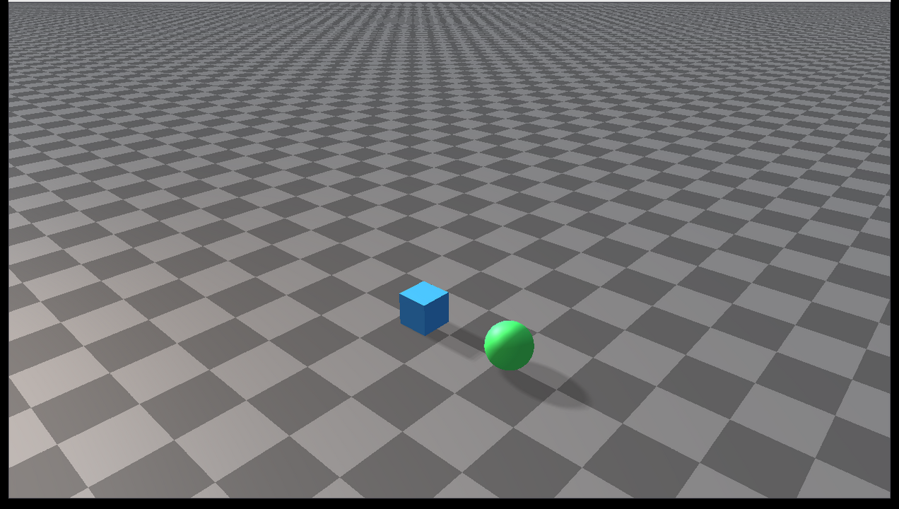

Rayrai Example: Runtime Scene Editing
{kind=link}

Overview
Visualizes runtime scene editing operations that are useful for reset-heavy workloads: stable object id lookup, single-body snapshots, collision filter changes, cloning, and object removal.
Use this example when building reset, randomization, replay, or scripted scene editing workflows. It shows how to mutate a running world between simulation steps without reconstructing the whole world.
Binary
Installed executable: rayrai_runtime_scene_editing.
This example is only built when the installed RaiSim package exposes the runtime scene editing APIs.
Run
Run the installed executable:
<raisim-install>/bin/rayrai_runtime_scene_editing
On Windows, run rayrai_runtime_scene_editing.exe instead.
This example uses the in-process rayrai renderer.
Details
Captures and restores a
World::SingleBodySnapshot.Clones a primitive single-body object with
cloneSingleBodyObject.Looks up a body by stable object id.
Toggles the sphere collision mask during the simulation.
Removes and recreates a cloned body while the world is running.
What to look for
The scene contains a source box, a cloned box, and a sphere. During the loop:
The source box is restored from a snapshot and relaunched.
The cloned box is periodically removed and recreated.
The sphere alternates between normal collision and a filtered collision mask.
These operations are intentionally visible so users can verify that the object state changes are reflected by rayrai immediately.
API pattern
The important pattern is:
raisim::World::SingleBodySnapshot snapshot;
world->captureSingleBodySnapshot(body, snapshot);
world->restoreSingleBodySnapshot(body, snapshot);
auto* clone = world->cloneSingleBodyObject(body, "clone");
world->setObjectCollisionFilter(clone, group, mask);
Call these APIs between simulation steps. The example keeps the world
single-threaded and performs all edits from the same loop that calls
world->integrate().